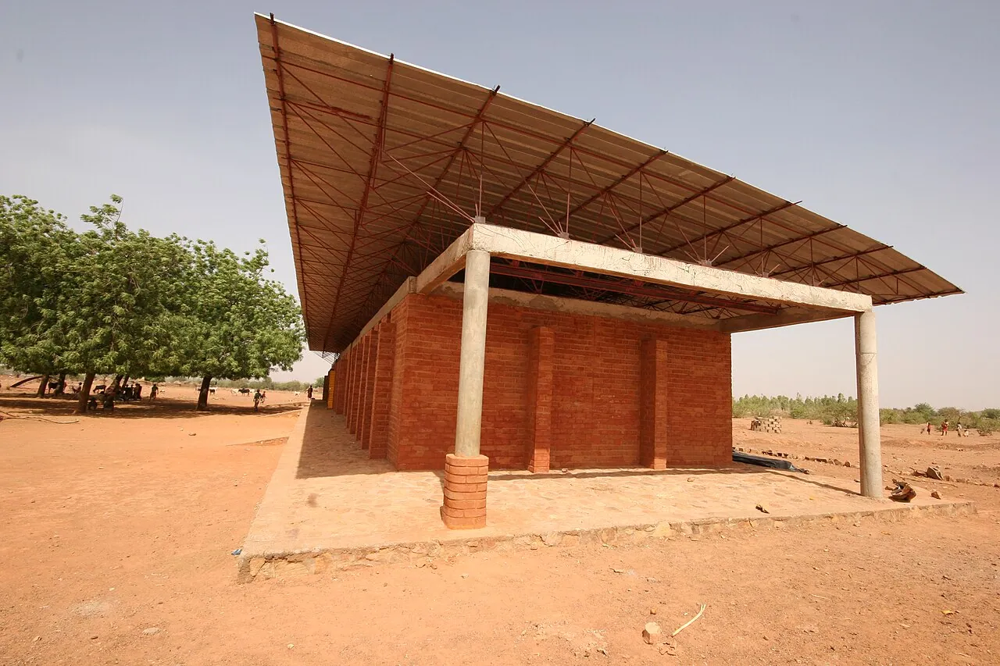
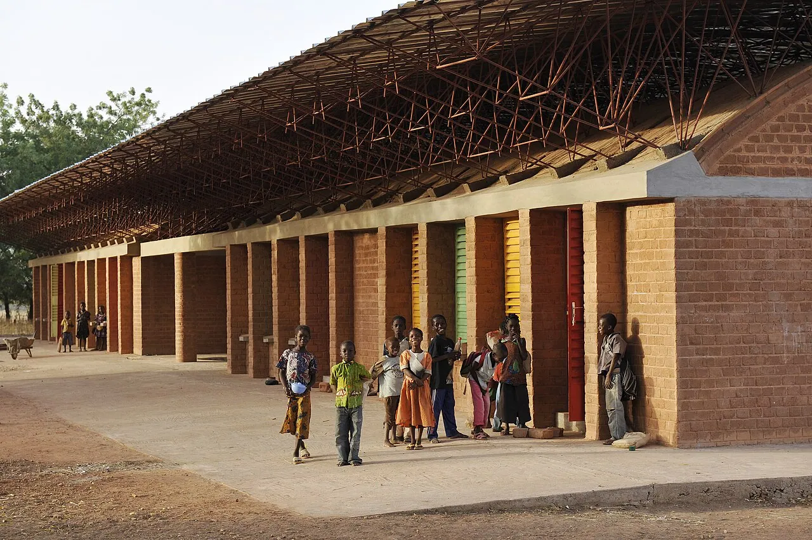
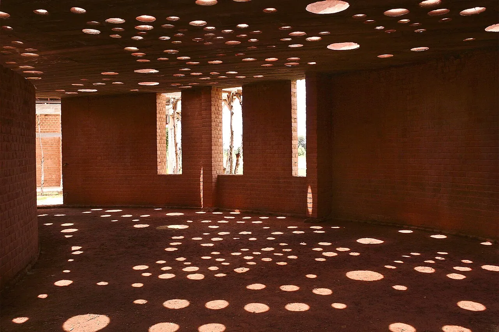

1/4 · Exterior · Primary School in Gando, Burkina Faso, that won the Aga Khan Award for ArchitecturePhoto: Helge Fahrnberger / www.helge.at · CC BY-SA 3.0 · source

2/4 · Exterior · Primary School GandoPhoto: Schulbausteine · CC BY-SA 3.0 · source

3/4 · Exterior · Estensione della scuola primaria a Gando, Burkina FasoPhoto: GandoIT · CC BY-SA 3.0 · source

4/4 · Interior · Interno della biblioteca del complesso della scuola primaria, a Gando, Burkina FasoPhoto: GandoIT · CC BY-SA 3.0 · source